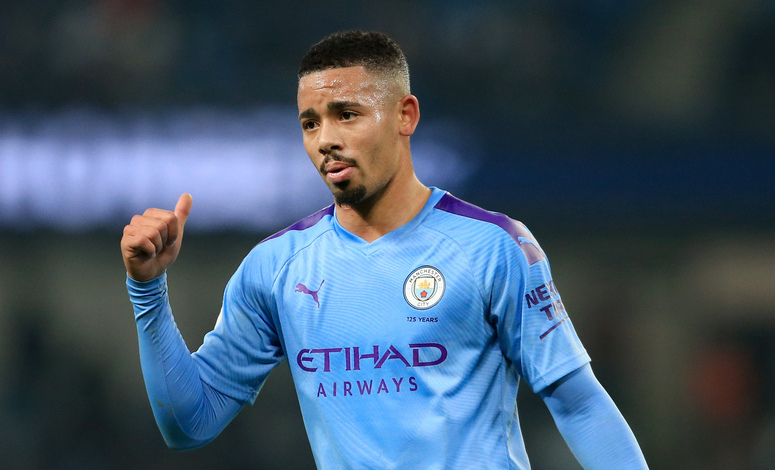

Manchester City has become one of the biggest clubs in Europe since being bought by Abu Dhabi United Group in 2008. The purchase has attracted world-class players and elite managers and has secured many trophies for a club that was previously seen as an afterthought in its own city. Despite recent success, City has yet to win the Champions League, while rivals Chelsea, Liverpool, and Manchester United have all lifted the trophy once in the last 12 years. Pep Guardiola’s side has no other competitions to worry about with its elimination from the FA Cup and the completion of the Premier League, so expect his team to have a strong showing when the Champions League returns in a few weeks.
Pep Guardiola’s side has mastered his possession-based style that relies on pace and aggressiveness in the final third. City’s top players make this style of play possible, but it is the depth of the squad that is truly fascinating. Given the compaction of this season because of COVID-19, many believe that the deeper squads will prevail in Europe’s biggest competition. Manchester City may have the best overall squad of the remaining teams in the Champions League, and Pep Guardiola will certainly use many of his players if his team advances to the later rounds.
The road to glory will not be easy, as City must finish off Real Madrid in the round of 16 and may face the likes of Juventus, Barcelona, or Bayern Munich before the final. Fortunately, the Citizens secured a 2-1 away win over Los Blancos before the lockdown in a match where Madrid captain Sergio Ramos saw red after a horrendous foul on Gabriel Jesus. Manchester City is in a great position to advance as a result of an away-goal advantage and Ramos’s absence for the second leg. With multiple weeks to prepare for this match, Pep Guardiola will take full advantage of his opponent’s vulnerability to put his players in the best position to succeed.
How Will They Line Up:
Guardiola loves to utilize a 4-3-3 formation but has also used a more conservative 4-2-3-1 at times in recent weeks. With his side already having a lead in its current matchup and the likelihood of aggressive opponents down the line, Guardiola may play it slightly safer with a 4-2-3-1.
Sergio Aguero is notably absent from the City squad due to a long term knee injury, so expect Gabriel Jesus to lead the attack as the lone striker. Raheem Sterling will likely be joined by either Riyad Mahrez or Bernardo Silva as the outside midfielders. If needed, these players can push up the sides and play as wingers to provide support in the attack. The central midfield trio will almost certainly include Kevin De Bruyne and Rodri, but the third selection is a bit up in the air. Pep Guardiola could choose a more attacking-minded player like David Silva or select Ilkay Gündogan to help shield his back-line. Teams are now able to make five substitutions due to rule changes, so both players may feature in the same match to ensure fresh legs in the midfield while still allowing youngster Phil Foden to appear in a cameo role. Kyle Walker and Benjamin Mendy should start as full-backs to provide pace and attacking support on the flanks, while Fernandinho and Nicolás Otamendi will compete to start alongside Aymeric Laporte in the center of the defense. As always, Ederson will provide his elite services in net, leading to a lineup that should look something like this:
Player To Watch:
Gabriel Jesus (Age: 23; Position: ST)
Gabriel Jesus has been subject to criticism at the club and international levels. His City career has been highlighted by goal droughts and exit rumors, and he was blasted by fans and pundits following his performance at the 2018 FIFA World Cup in which he started all five games for Brazil but failed to score a goal. With Sergio Aguero out against Real Madrid and possibly longer, the spotlight shifts to Jesus as he tries to help guide City through the Champions League. The young striker certainly has the talent to make an incredible impact on the rest of the tournament (he did notch 14 goals in the Premier League this year), but his sporadic play could also doom his side. If Jesus plays to his full ability, he will not just silence his critics and confirm his place in one of Europe’s top sides, he may just lead City to its most prized possession.

Prediction: Final
This was a tough decision for me, but I figure it’s better to be an optimist, right? As mentioned above, I believe Sergio Ramos’s absence in the second leg of the round of 16 and City’s two away goals will ultimately lead to Madrid’s demise in the Champions League. If City can get the job done at the Etihad, the club will face either Lyon or Juventus in the quarter-final. City is a better side than Lyon (who miraculously leads Juventus after one match) and will be on better rest than Juventus if the Italian champions reach the quarter-final as Serie A is still not complete. As a result, I expect the Citizens to defeat either side and advance to the semi-final, where they could face Barcelona, Bayern Munich, Chelsea, or Napoli. Barcelona and Bayern are the favorites to reach the quarter-finals over Napoli and Chelsea respectively, and I like City’s chances over both sides. Barcelona is nearing the end of a tumultuous season under Quique Setién and their talent can only take them so far, while Pep Guardiola will be motivated to defeat his former players at Bayern, who have been untested all season. Manchester City has all of the pieces to make a long run in the Champions League and will be driven to win the trophy to match their domestic rivals as European Champions. It is up to Pep Guardiola, Kevin De Bruyne, and company to achieve the ultimate prize in club football and complete Manchester City’s quest for immortality.